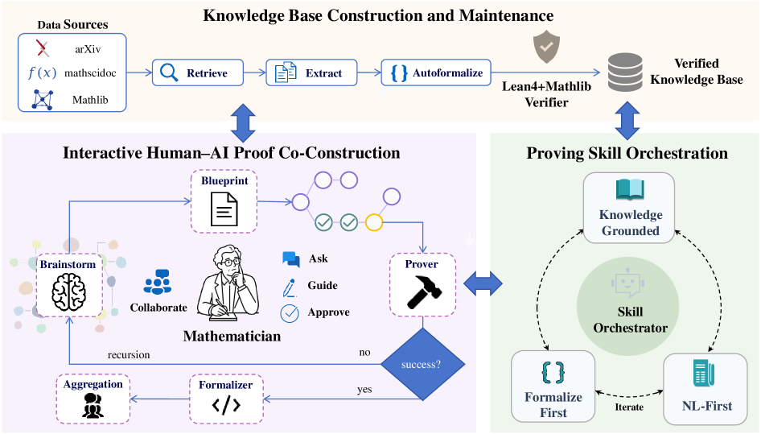

MathCoPilot is a human-in-the-loop system where AI agents generate and iteratively verify Lean 4 proofs against Mathlib under mathematician guidance.
Abstract
Existing LLM-based theorem provers have achieved impressive results on formal mathematics benchmarks, yet they remain confined to acting as autonomous agents that prove a stated proposition. In this paper, we propose MathCoPilot, a human-in-the-loop system that embodies a new human–AI symbiotic paradigm for mathematical research, in which the mathematician steers the high-level mathematical direction while AI agents carry out the detailed formalization and proof work under continuous human guidance. MathCoPilot unifies three core capabilities: (1) an interactive workbench where the mathematician and AI agents collaborate through a living proof blueprint that decomposes a proof into navigable steps the human can directly inspect, direct, and refine; (2) automated proving skill orchestration with adaptive knowledge base search and Lean-integrated iterative verification; and (3) topic-driven paper retrieval and automated formalization into a verified Lean knowledge base. Using MathCoPilot, we systematically compare four state-of-the-art LLMs, including Gemini 3.1 Pro, GPT-5.4, and Claude Opus 4.7, on a FormalMATH subset and on two real PDE theorems requiring deep domain expertise, evaluating their ability to produce verified Lean 4 proofs and to identify errors in deliberately incorrect proofs. Our results show that while current models can handle undergraduate-level problems with high success rates under favorable autoformalization conditions, substantial challenges remain for domain-specific theorems requiring genuine mathematical understanding.
Problem
Existing LLM-based theorem provers act as autonomous agents that prove a stated proposition, overlooking the mathematician's broader research workflow. There is no system that supports human-AI collaboration across reading, knowledge accumulation, and interactive formalization.
Approach
MathCoPilot organizes proof construction as a human-in-the-loop pipeline centered on an editable proof blueprint that decomposes proofs into navigable nodes. Specialized agents (Brainstorm, Blueprint) propose strategies and sub-steps under human control. The system integrates Lean 4 verification with iterative refinement, adaptive knowledge base search, and topic-driven paper retrieval into a verified Lean knowledge base. It supports both formalization-first and NL-first proving skills.

Figure 1 : Architecture of MathCoPilot . The mathematician interacts with three core capabilities, all connected to the Lean 4 verifier and a personal verified knowledge base.
Results
On a 21-problem FormalMATH subset, NL-first outperformed formalization-first (31.75% vs 15.87% overall). The interactive blueprint loop recovered 9/12 GPT-5.4-missed cases immediately and 10/12 after local lemma refinement. Two real numerical PDE theorems proved substantially harder, with baseline attempts producing sorry-containing files.
Model
FF
NL
Gain
Gemini 3.1 Pro
4/21 (19.05%)
7/21 (33.33%)
+14.29
GPT-5.4
3/21 (14.29%)
6/21 (28.57%)
+14.29
Claude Opus 4.7
3/21 (14.29%)
7/21 (33.33%)
+19.05
Overall
10/63 (15.87%)
20/63 (31.75%)
+15.87
Formalization-First vs NL-first pass rates on FormalMATH subset
First pass
After refinement
Total
9/12 (75.0%)
10/12 (83.3%)
GPT-unsolved subset recovery via interactive blueprint